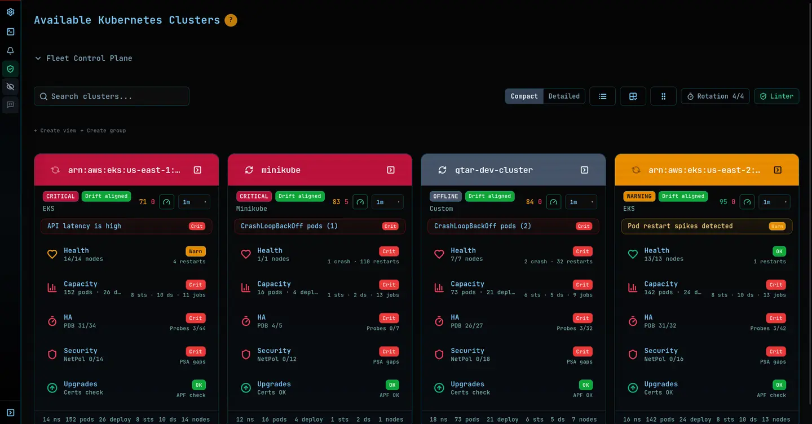
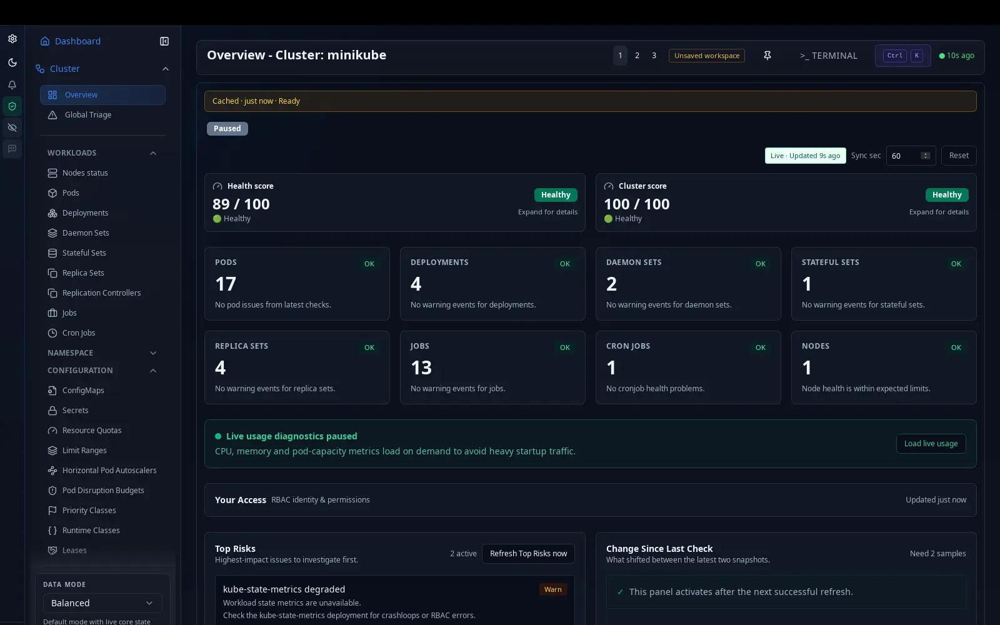

Rozoom auto-detects your local clusters — or paste a URL + token for anything remote.
No OIDC config, no kubeconfig editing, no deployment wizard.
Rozoom автоматично визначає ваші локальні кластери — або вставте URL + токен для будь-якого віддаленого.
Без OIDC, без редагування kubeconfig, без майстра розгортання.
Open source · Apache 2.0 · GitHub → Відкритий код · Apache 2.0 · GitHub →

The problem Проблема
Bare terminal or heavyweight platform — pick your pain. Голий термінал або важка платформа — обирайте свій біль.
Zero visibility past the last command. Every question means tabbing to docs, then back to the terminal — and back again. Нуль видимості за межами останньої команди. Кожне питання — це перемикання в документацію, назад у термінал, і знову назад.
Weeks of onboarding before anyone's productive. A tutorial is mandatory. And once it's wired in, you're locked in. Тижні онбордингу перш ніж хтось стає продуктивним. Туторіал — обов'язковий. А коли платформа вже вбудована — ви в vendor lock-in.
Why Чому
Not a feature list — the reason Rozoom looks the way it does. Це не список фіч — причина, чому Rozoom виглядає саме так.
You see what's actually happening in the cluster — not a curated summary of it. No black box between you and the API server. Ви бачите, що насправді відбувається в кластері, — не куровану вижимку з нього. Без чорної скриньки між вами і API-сервером.
Every other tool adds something: an agent on your cluster, an OIDC setup, a wizard. We removed those instead. Nothing runs on your cluster. Nothing to configure before you connect. Кожен інший інструмент щось додає: агента на кластер, OIDC-налаштування, wizard. Ми ці речі прибрали. Нічого не запускається на вашому кластері. Нічого не треба налаштовувати перед підключенням.
What you see Що ви бачите
From zero to seeing your cluster in under a minute. Від нуля до перегляду кластера — менше хвилини.
Any K8s cluster, any cloud provider — EKS, GKE, AKS, self-hosted, or local. Будь-який K8s кластер, будь-який хмарний провайдер — EKS, GKE, AKS, self-hosted або локальний.
Read-only is enough to start. No cluster-side installs. No Helm charts. Read-only — достатньо для початку. Без встановлення на кластер. Без Helm чартів.
Namespaces, workloads, logs — all visible immediately. No waiting, no config files. Namespaces, workloads, логи — все видно одразу. Без очікування, без конфіг-файлів.

What you get Що ви отримуєте
No kubeconfig editing, no OIDC provider setup, no deployment wizard. URL + token = done. Без редагування kubeconfig, без OIDC, без майстра розгортання. URL + токен = готово.
EKS, GKE, AKS, self-hosted, minikube, k3s — if it speaks Kubernetes, Rozoom connects to it. EKS, GKE, AKS, self-hosted, minikube, k3s — якщо це Kubernetes, Rozoom підключиться.
Not just read-only: scale, restart, and stream logs — all from the same screen. Не тільки перегляд: масштабування, перезапуск, стрімінг логів — все з одного екрану.
Apache 2.0 license. Self-host or use as-is. No vendor lock-in, no enterprise tier required. Ліцензія Apache 2.0. Self-host або використовуйте як є. Без vendor lock-in, без enterprise-рівня.
How we compare Як ми порівнюємось
Every tool below works. Rozoom is the one with nothing to install or configure. Кожен інструмент нижче працює. Rozoom — той, якому нічого встановлювати чи налаштовувати.
| Tool Інструмент | Setup required Що потрібно налаштувати |
|---|---|
| Rozoom | Auto-detects local, or URL + token remote · no kubeconfig editing · client-side, zero cluster-install · Apache 2.0 Автовизначення локальних, або URL + токен для віддалених · без редагування kubeconfig · client-side, нуль cluster-install · Apache 2.0 |
| Lens | kubeconfig + context configuration · open source (core) kubeconfig + налаштування контексту · відкритий код (core) |
| k9s | terminal access + kubeconfig · open source (Apache 2.0) доступ до термінала + kubeconfig · відкритий код (Apache 2.0) |
| Headlamp | choose 1 of 5 deployment paths · Apache 2.0 вибір з 5 способів розгортання · Apache 2.0 |
| Rancher | Helm install + infrastructure setup · Enterprise tier Helm install + налаштування інфраструктури · Enterprise-рівень |
Open source, Apache 2.0. No signup required. Start with a star. Відкритий код, Apache 2.0. Реєстрація не потрібна. Почніть із зірки.